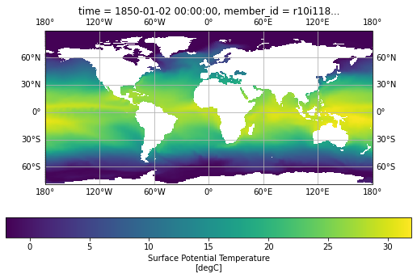
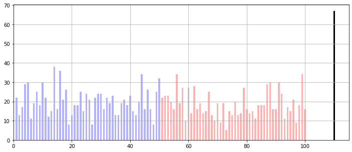
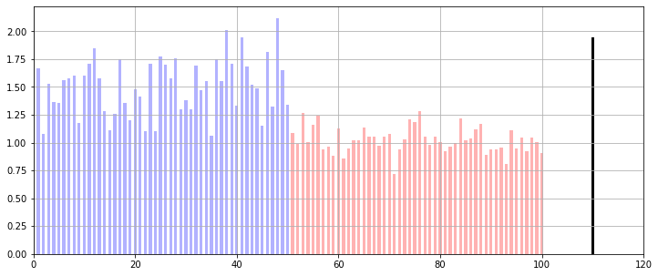

Example for reading the LENS2 dataset and extract SST time-series for case 1
Contents
Example for reading the LENS2 dataset and extract SST time-series for case 1#
# Load required modules
import numpy as np
from datetime import date
from matplotlib import pyplot as plt
import cartopy.crs as ccrs
import xarray as xr
# Load marineHeatWaves definition module
import marineHeatWaves as mhw
from distributed import Client
from ncar_jobqueue import NCARCluster
import intake
import pop_tools
from misc import get_ij
import warnings, getpass
warnings.filterwarnings("ignore")
cluster = NCARCluster(cores=4,
processes=1,
resource_spec='select=1:ncpus=1:mem=50GB',
)
cluster.scale(20)
client = Client(cluster)
client
Client
Client-fb4c0af7-018f-11ed-88d4-3cecef1acbfa
| Connection method: Cluster object | Cluster type: dask_jobqueue.PBSCluster |
| Dashboard: https://jupyterhub.hpc.ucar.edu/stable/user/gmarques/high-mem/proxy/40439/status |
Cluster Info
PBSCluster
fc0e7d97
| Dashboard: https://jupyterhub.hpc.ucar.edu/stable/user/gmarques/high-mem/proxy/40439/status | Workers: 0 |
| Total threads: 0 | Total memory: 0 B |
Scheduler Info
Scheduler
Scheduler-de13fee5-c4f1-4951-b71e-c47e1bc7c2d3
| Comm: tcp://10.12.206.63:35912 | Workers: 0 |
| Dashboard: https://jupyterhub.hpc.ucar.edu/stable/user/gmarques/high-mem/proxy/40439/status | Total threads: 0 |
| Started: Just now | Total memory: 0 B |
Workers
catalog = intake.open_esm_datastore(
'/glade/collections/cmip/catalog/intake-esm-datastore/catalogs/glade-cesm2-le.json'
)
catalog
glade-cesm2-le catalog with 8553 dataset(s) from 5359843 asset(s):
| unique | |
|---|---|
| component | 6 |
| stream | 26 |
| case | 200 |
| member_id | 100 |
| variable | 1906 |
| start_time | 157 |
| end_time | 180 |
| time_range | 163 |
| long_name | 1800 |
| units | 184 |
| vertical_levels | 1 |
| frequency | 7 |
| path | 5359843 |
| experiment | 2 |
| forcing_variant | 2 |
| cesm_member_id | 100 |
| control_branch_year | 24 |
| cmip_experiment_id | 200 |
cat_subset = catalog.search(component='ocn',
variable='SST',
frequency='day_1') #.unique()
cat_subset.df.head()
| component | stream | case | member_id | variable | start_time | end_time | time_range | long_name | units | vertical_levels | frequency | path | experiment | forcing_variant | cesm_member_id | control_branch_year | cmip_experiment_id | |
|---|---|---|---|---|---|---|---|---|---|---|---|---|---|---|---|---|---|---|
| 0 | ocn | pop.h.nday1 | b.e21.BHISTcmip6.f09_g17.LE2-1001.001 | r1i1001p1f1 | SST | 1850-01-01 | 1860-01-01 | 18500101-18600101 | Surface Potential Temperature | degC | 1.0 | day_1 | /glade/campaign/cgd/cesm/CESM2-LE/timeseries/o... | historical | cmip6 | 1001.001 | 1001 | CESM2_historical_r1i1001p1f1 |
| 1 | ocn | pop.h.nday1 | b.e21.BHISTcmip6.f09_g17.LE2-1001.001 | r1i1001p1f1 | SST | 1860-01-02 | 1870-01-01 | 18600102-18700101 | Surface Potential Temperature | degC | 1.0 | day_1 | /glade/campaign/cgd/cesm/CESM2-LE/timeseries/o... | historical | cmip6 | 1001.001 | 1001 | CESM2_historical_r1i1001p1f1 |
| 2 | ocn | pop.h.nday1 | b.e21.BHISTcmip6.f09_g17.LE2-1001.001 | r1i1001p1f1 | SST | 1870-01-02 | 1880-01-01 | 18700102-18800101 | Surface Potential Temperature | degC | 1.0 | day_1 | /glade/campaign/cgd/cesm/CESM2-LE/timeseries/o... | historical | cmip6 | 1001.001 | 1001 | CESM2_historical_r1i1001p1f1 |
| 3 | ocn | pop.h.nday1 | b.e21.BHISTcmip6.f09_g17.LE2-1001.001 | r1i1001p1f1 | SST | 1880-01-02 | 1890-01-01 | 18800102-18900101 | Surface Potential Temperature | degC | 1.0 | day_1 | /glade/campaign/cgd/cesm/CESM2-LE/timeseries/o... | historical | cmip6 | 1001.001 | 1001 | CESM2_historical_r1i1001p1f1 |
| 4 | ocn | pop.h.nday1 | b.e21.BHISTcmip6.f09_g17.LE2-1001.001 | r1i1001p1f1 | SST | 1890-01-02 | 1900-01-01 | 18900102-19000101 | Surface Potential Temperature | degC | 1.0 | day_1 | /glade/campaign/cgd/cesm/CESM2-LE/timeseries/o... | historical | cmip6 | 1001.001 | 1001 | CESM2_historical_r1i1001p1f1 |
%%time
dset_dict_raw = cat_subset.to_dataset_dict()
--> The keys in the returned dictionary of datasets are constructed as follows:
'component.experiment.stream.forcing_variant.variable'
100.00% [4/4 01:27<00:00]
CPU times: user 1min 2s, sys: 2.76 s, total: 1min 4s
Wall time: 1min 53s
[key for key in dset_dict_raw.keys()]
['ocn.ssp370.pop.h.nday1.cmip6.SST',
'ocn.historical.pop.h.nday1.smbb.SST',
'ocn.historical.pop.h.nday1.cmip6.SST',
'ocn.ssp370.pop.h.nday1.smbb.SST']
ds_cmip6 = dset_dict_raw['ocn.historical.pop.h.nday1.cmip6.SST']
ds_cmip6
<xarray.Dataset>
Dimensions: (z_t: 60, z_t_150m: 15, z_w: 60, z_w_top: 60, z_w_bot: 60, nlat: 384, nlon: 320, time: 60225, d2: 2, member_id: 50)
Coordinates:
* z_t (z_t) float32 500.0 1.5e+03 ... 5.125e+05 5.375e+05
* z_t_150m (z_t_150m) float32 500.0 1.5e+03 ... 1.45e+04
* z_w (z_w) float32 0.0 1e+03 2e+03 ... 5e+05 5.25e+05
* z_w_top (z_w_top) float32 0.0 1e+03 2e+03 ... 5e+05 5.25e+05
* z_w_bot (z_w_bot) float32 1e+03 2e+03 ... 5.25e+05 5.5e+05
ULONG (nlat, nlon) float64 dask.array<chunksize=(384, 320), meta=np.ndarray>
ULAT (nlat, nlon) float64 dask.array<chunksize=(384, 320), meta=np.ndarray>
TLONG (nlat, nlon) float64 dask.array<chunksize=(384, 320), meta=np.ndarray>
TLAT (nlat, nlon) float64 dask.array<chunksize=(384, 320), meta=np.ndarray>
* time (time) object 1850-01-02 00:00:00 ... 2015-01-01 ...
* member_id (member_id) <U12 'r10i1181p1f1' ... 'r9i1301p1f1'
Dimensions without coordinates: nlat, nlon, d2
Data variables: (12/52)
dz (z_t) float32 dask.array<chunksize=(60,), meta=np.ndarray>
dzw (z_w) float32 dask.array<chunksize=(60,), meta=np.ndarray>
KMT (nlat, nlon) float64 dask.array<chunksize=(384, 320), meta=np.ndarray>
KMU (nlat, nlon) float64 dask.array<chunksize=(384, 320), meta=np.ndarray>
REGION_MASK (nlat, nlon) float64 dask.array<chunksize=(384, 320), meta=np.ndarray>
UAREA (nlat, nlon) float64 dask.array<chunksize=(384, 320), meta=np.ndarray>
... ...
salinity_factor float64 ...
sflux_factor float64 ...
nsurface_t float64 ...
nsurface_u float64 ...
time_bound (time, d2) object dask.array<chunksize=(3650, 2), meta=np.ndarray>
SST (member_id, time, nlat, nlon) float32 dask.array<chunksize=(1, 3650, 384, 320), meta=np.ndarray>
Attributes:
source: CCSM POP2, the CCSM Ocean Component
model_doi_url: https://doi.org/10.5065/D67H1H0V
time_period_freq: day_1
revision: $Id$
history: none
cell_methods: cell_methods = time: mean ==> the variable value...
calendar: All years have exactly 365 days.
intake_esm_varname: ['SST']
Conventions: CF-1.0; http://www.cgd.ucar.edu/cms/eaton/netcdf...
contents: Diagnostic and Prognostic Variables
intake_esm_dataset_key: ocn.historical.pop.h.nday1.cmip6.SSTds_smbb = dset_dict_raw['ocn.historical.pop.h.nday1.smbb.SST']
ds_smbb
<xarray.Dataset>
Dimensions: (z_t: 60, z_t_150m: 15, z_w: 60, z_w_top: 60, z_w_bot: 60, nlat: 384, nlon: 320, time: 60225, d2: 2, member_id: 50)
Coordinates:
* z_t (z_t) float32 500.0 1.5e+03 ... 5.125e+05 5.375e+05
* z_t_150m (z_t_150m) float32 500.0 1.5e+03 ... 1.45e+04
* z_w (z_w) float32 0.0 1e+03 2e+03 ... 5e+05 5.25e+05
* z_w_top (z_w_top) float32 0.0 1e+03 2e+03 ... 5e+05 5.25e+05
* z_w_bot (z_w_bot) float32 1e+03 2e+03 ... 5.25e+05 5.5e+05
ULONG (nlat, nlon) float64 dask.array<chunksize=(384, 320), meta=np.ndarray>
ULAT (nlat, nlon) float64 dask.array<chunksize=(384, 320), meta=np.ndarray>
TLONG (nlat, nlon) float64 dask.array<chunksize=(384, 320), meta=np.ndarray>
TLAT (nlat, nlon) float64 dask.array<chunksize=(384, 320), meta=np.ndarray>
* time (time) object 1850-01-02 00:00:00 ... 2015-01-01 ...
* member_id (member_id) <U12 'r10i1191p1f2' ... 'r9i1171p1f2'
Dimensions without coordinates: nlat, nlon, d2
Data variables: (12/52)
dz (z_t) float32 dask.array<chunksize=(60,), meta=np.ndarray>
dzw (z_w) float32 dask.array<chunksize=(60,), meta=np.ndarray>
KMT (nlat, nlon) float64 dask.array<chunksize=(384, 320), meta=np.ndarray>
KMU (nlat, nlon) float64 dask.array<chunksize=(384, 320), meta=np.ndarray>
REGION_MASK (nlat, nlon) float64 dask.array<chunksize=(384, 320), meta=np.ndarray>
UAREA (nlat, nlon) float64 dask.array<chunksize=(384, 320), meta=np.ndarray>
... ...
salinity_factor float64 ...
sflux_factor float64 ...
nsurface_t float64 ...
nsurface_u float64 ...
time_bound (time, d2) object dask.array<chunksize=(3650, 2), meta=np.ndarray>
SST (member_id, time, nlat, nlon) float32 dask.array<chunksize=(1, 3650, 384, 320), meta=np.ndarray>
Attributes:
source: CCSM POP2, the CCSM Ocean Component
model_doi_url: https://doi.org/10.5065/D67H1H0V
time_period_freq: day_1
revision: $Id$
history: none\nModified to correct REGION_MASK and SST Fi...
cell_methods: cell_methods = time: mean ==> the variable value...
calendar: All years have exactly 365 days.
intake_esm_varname: ['SST']
Conventions: CF-1.0; http://www.cgd.ucar.edu/cms/eaton/netcdf...
contents: Diagnostic and Prognostic Variables
intake_esm_dataset_key: ocn.historical.pop.h.nday1.smbb.SSTds_all = xr.concat([ds_cmip6,ds_smbb], dim='member_id',
data_vars='minimal',coords="minimal",
compat="override")
#ds_all
ds_all
<xarray.Dataset>
Dimensions: (z_t: 60, z_t_150m: 15, z_w: 60, z_w_top: 60, z_w_bot: 60, nlat: 384, nlon: 320, time: 60225, d2: 2, member_id: 100)
Coordinates:
* z_t (z_t) float32 500.0 1.5e+03 ... 5.125e+05 5.375e+05
* z_t_150m (z_t_150m) float32 500.0 1.5e+03 ... 1.45e+04
* z_w (z_w) float32 0.0 1e+03 2e+03 ... 5e+05 5.25e+05
* z_w_top (z_w_top) float32 0.0 1e+03 2e+03 ... 5e+05 5.25e+05
* z_w_bot (z_w_bot) float32 1e+03 2e+03 ... 5.25e+05 5.5e+05
ULONG (nlat, nlon) float64 dask.array<chunksize=(384, 320), meta=np.ndarray>
ULAT (nlat, nlon) float64 dask.array<chunksize=(384, 320), meta=np.ndarray>
TLONG (nlat, nlon) float64 dask.array<chunksize=(384, 320), meta=np.ndarray>
TLAT (nlat, nlon) float64 dask.array<chunksize=(384, 320), meta=np.ndarray>
* time (time) object 1850-01-02 00:00:00 ... 2015-01-01 ...
* member_id (member_id) <U12 'r10i1181p1f1' ... 'r9i1171p1f2'
Dimensions without coordinates: nlat, nlon, d2
Data variables: (12/52)
dz (z_t) float32 dask.array<chunksize=(60,), meta=np.ndarray>
dzw (z_w) float32 dask.array<chunksize=(60,), meta=np.ndarray>
KMT (nlat, nlon) float64 dask.array<chunksize=(384, 320), meta=np.ndarray>
KMU (nlat, nlon) float64 dask.array<chunksize=(384, 320), meta=np.ndarray>
REGION_MASK (nlat, nlon) float64 dask.array<chunksize=(384, 320), meta=np.ndarray>
UAREA (nlat, nlon) float64 dask.array<chunksize=(384, 320), meta=np.ndarray>
... ...
salinity_factor float64 ...
sflux_factor float64 ...
nsurface_t float64 ...
nsurface_u float64 ...
time_bound (time, d2) object dask.array<chunksize=(3650, 2), meta=np.ndarray>
SST (member_id, time, nlat, nlon) float32 dask.array<chunksize=(1, 3650, 384, 320), meta=np.ndarray>
Attributes:
source: CCSM POP2, the CCSM Ocean Component
model_doi_url: https://doi.org/10.5065/D67H1H0V
time_period_freq: day_1
revision: $Id$
history: none
cell_methods: cell_methods = time: mean ==> the variable value...
calendar: All years have exactly 365 days.
intake_esm_varname: ['SST']
Conventions: CF-1.0; http://www.cgd.ucar.edu/cms/eaton/netcdf...
contents: Diagnostic and Prognostic Variables
intake_esm_dataset_key: ocn.historical.pop.h.nday1.cmip6.SST# read the pop 1 deg grid from pop_tools
# we will use variables TLONG and TLAT
pop_grid = pop_tools.get_grid('POP_gx1v7')
# in ds, TLONG and TLAT have missing values (NaNs)
# so we need to override them with the values from
# pop_grid, which does not have missing values
ds_cmip6['TLONG'] = pop_grid.TLONG
ds_cmip6['TLAT'] = pop_grid.TLAT
plt.figure(figsize=(9,5));
ax = plt.axes(projection=ccrs.PlateCarree());
pc = ds_cmip6.SST.isel(time=0, member_id=0).plot.pcolormesh(ax=ax,
transform=ccrs.PlateCarree(),
x='TLONG',
y='TLAT',
vmin=-2,
vmax=32,
cbar_kwargs={"orientation": "horizontal"},)
ax.gridlines(draw_labels=True);

Case study: a region near Western Australia#
Select the region where the SST time-series will be extracted.
#i, j = get_ij(112.5, -29.5, pop_grid)
i, j = get_ij(90, -22, pop_grid)
print('i = {}, j = {}'.format(i,j))
# number of grid points to expand over all directions
n = 10
print('Region is defined by i = {},{}, j = {},{}'.format(i-n,
i+n,
j-n,
j+n))
i = 115, j = 109
Region is defined by i = 105,125, j = 99,119
# extract area and define start and end dates
area = pop_grid.TAREA.isel(nlon = slice(i-n,i+n),
nlat = slice(j-n,j+n))
start="1982-01-01"
end="2014-12-31"
path_oisst = '/glade/scratch/{}/noaa.oisst.v2.highres/'.format(getpass.getuser())
oisst=xr.open_dataset(path_oisst+'oisst_remapped_POP_gx1v7.nc')
wa_ds_remapped = oisst.isel(nlon = slice(i-n,i+n), nlat = slice(j-n,j+n),
).sel(time = slice(start,end)).weighted(area).mean(dim=['nlat','nlon']).load()
#wa_ds_filtered
%%time
wa_ds_cmip6 = ds_cmip6.SST.isel(nlon = slice(i-n,i+n),
nlat = slice(j-n,j+n),
).sel(time = slice(start,end)).weighted(area).mean(dim=['nlat','nlon']).load()
CPU times: user 7.87 s, sys: 453 ms, total: 8.32 s
Wall time: 1min 26s
fig, ax = plt.subplots()
wa_ds_cmip6.isel(member_id=0).plot(ax=ax)
[<matplotlib.lines.Line2D at 0x2b01c6a21310>]
%%time
wa_ds_smbb = ds_smbb.SST.isel(nlon = slice(i-n,i+n),
nlat = slice(j-n,j+n),
).sel(time = slice(start,end)).weighted(area).mean(dim=['nlat','nlon']).load()
CPU times: user 8.85 s, sys: 503 ms, total: 9.35 s
Wall time: 1min 30s
%%time
wa_ds_all = ds_all.SST.isel(nlon = slice(i-n,i+n), nlat = slice(j-n,j+n),
).sel(time = slice(start,end)).weighted(area).mean(dim=['nlat','nlon']).load()
CPU times: user 20.4 s, sys: 1.19 s, total: 21.6 s
Wall time: 2min 50s
#wa_ds_cmip6.time
times = xr.cftime_range("1982-01-01", "2014-12-31", calendar="julian")
len(times)
12053
f, ax = plt.subplots(1, 1, figsize=(12, 5))
wa_ds_cmip6.plot(ax=ax,hue="member_id",add_legend=False, color='lightblue', label='historical');
wa_ds_cmip6.mean('member_id').plot(ax=ax,color='blue', label='mean historical', lw=2)
wa_ds_smbb.plot(ax=ax,hue="member_id",add_legend=False, color='lightgray', label='ssp370');
wa_ds_smbb.mean('member_id').plot(ax=ax,color='red', label='mean ssp370', lw=2)
ax.plot(times,wa_ds_remapped.sst.values,color='k', label='oisst' , lw=2)
ax.set_title('LENS cmip6 (lightblue; mean in blue), \
LENS smbb (gray; mean in red), wa_ds_remapped (black)')
#ax.legend()
Text(0.5, 1.0, 'LENS cmip6 (lightblue; mean in blue), LENS smbb (gray; mean in red), wa_ds_remapped (black)')
Compute Marine Heatwaves#
# Generate time vector for the obs using datetime format
# (January 1 of year 1 is day 1)
t_obs = np.arange(date(1982,1,1).toordinal(),
date(2014,12,31).toordinal()+1)
dates = [date.fromordinal(tt.astype(int)) for tt in t_obs]
#obs
mhws_obs, clim_obs = mhw.detect(t_obs,
wa_ds_remapped.sst.values)
time_idx = wa_ds_cmip6.indexes['time'].to_datetimeindex()
t = np.zeros(len(time_idx))
for i in range(len(time_idx)):
t[i] = date(time_idx[i].year,
time_idx[i].month, time_idx[i].day).toordinal()
t = t.astype(int)
dates = [date.fromordinal(tt.astype(int)) for tt in t]
mhws_cmip6 = []
clim_cmip6 = []
for i in range(len(wa_ds_cmip6.member_id)):
mhws, clim = mhw.detect(t, wa_ds_cmip6[i,:].values,
alternateClimatology=[t_obs, wa_ds_remapped.sst.values])
mhws_cmip6.append(mhws)
clim_cmip6.append(clim)
# mean from all cmip6 members
mhws_cmip6_mean, clim_cmip6_mean = mhw.detect(t,
wa_ds_cmip6.mean('member_id').values,
alternateClimatology=[t_obs,
wa_ds_remapped.sst.values])
mhws_smbb = []
clim_smbb = []
for i in range(len(wa_ds_smbb.member_id)):
mhws, clim = mhw.detect(t, wa_ds_smbb[i,:].values,
alternateClimatology=[t_obs,
wa_ds_remapped.sst.values])
mhws_smbb.append(mhws)
clim_smbb.append(clim)
# mean from all smbb members
#mhws_smbb_mean, clim_smbb_mean = mhw.detect(t,
# wa_ds_smbb.mean('member_id').values)
# mean from all cmip6 and smbb members combined
#mhws_all_mean, clim_all_mean = mhw.detect(t,
# wa_ds_all.mean('member_id').values)
nevents_cmip6 = []
intensity_cmip6 = []
cat1_cmip6 = []
cat2_cmip6 = []
cat3_cmip6 = []
cat4_cmip6 = []
for i in range(len(wa_ds_cmip6.member_id)):
nevents_cmip6.append(mhws_cmip6[i]['n_events'])
intensity_cmip6.append(np.max(np.array(mhws_cmip6[i]['intensity_max'])))
tmp = np.array(mhws_cmip6[i]['category'])
cat1_cmip6.append(len(np.where(tmp=='Moderate')[0]))
cat2_cmip6.append(len(np.where(tmp=='Strong')[0]))
cat3_cmip6.append(len(np.where(tmp=='Severe')[0]))
cat4_cmip6.append(len(np.where(tmp=='Extreme')[0]))
nevents_obs = mhws_obs['n_events']
intensity_obs = np.max(np.array(mhws_obs['intensity_max']))
cat1_obs = []
cat2_obs = []
cat3_obs = []
cat4_obs = []
tmp = np.array(mhws_obs['category'])
cat1_obs.append(len(np.where(tmp=='Moderate')[0]))
cat2_obs.append(len(np.where(tmp=='Strong')[0]))
cat3_obs.append(len(np.where(tmp=='Severe')[0]))
cat4_obs.append(len(np.where(tmp=='Extreme')[0]))
nevents_smbb = []
intensity_smbb = []
for i in range(len(wa_ds_smbb.member_id)):
nevents_smbb.append(mhws_smbb[i]['n_events'])
intensity_smbb.append(np.max(np.array(mhws_smbb[i]['intensity_mean'])))
member_id1 = np.arange(1,51)
member_id2 = np.arange(51,101)
Number of events#
plt.figure(figsize=(12,5))
plt.bar(member_id1,nevents_cmip6,color='blue',width=0.6, alpha=0.3)
plt.bar(member_id2,nevents_smbb,color='red',width=0.6, alpha=0.3)
plt.bar([110],nevents_obs,color='k',width=0.6)
plt.xlim(0,115);
plt.grid()

Max intensity#
plt.figure(figsize=(12,5))
plt.bar(member_id1,intensity_cmip6,color='blue',width=0.6, alpha=0.3)
plt.bar(member_id2,intensity_smbb,color='red',width=0.6, alpha=0.3)
plt.bar([110],intensity_obs,color='k',width=0.6)
plt.xlim(0,120)
plt.grid()

mhws.keys()
dict_keys(['time_start', 'time_end', 'time_peak', 'date_start', 'date_end', 'date_peak', 'index_start', 'index_end', 'index_peak', 'duration', 'duration_moderate', 'duration_strong', 'duration_severe', 'duration_extreme', 'intensity_max', 'intensity_mean', 'intensity_var', 'intensity_cumulative', 'intensity_max_relThresh', 'intensity_mean_relThresh', 'intensity_var_relThresh', 'intensity_cumulative_relThresh', 'intensity_max_abs', 'intensity_mean_abs', 'intensity_var_abs', 'intensity_cumulative_abs', 'category', 'rate_onset', 'rate_decline', 'n_events'])